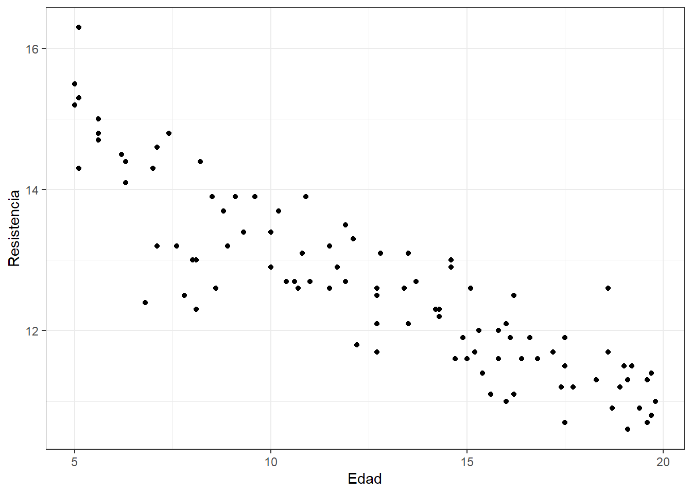
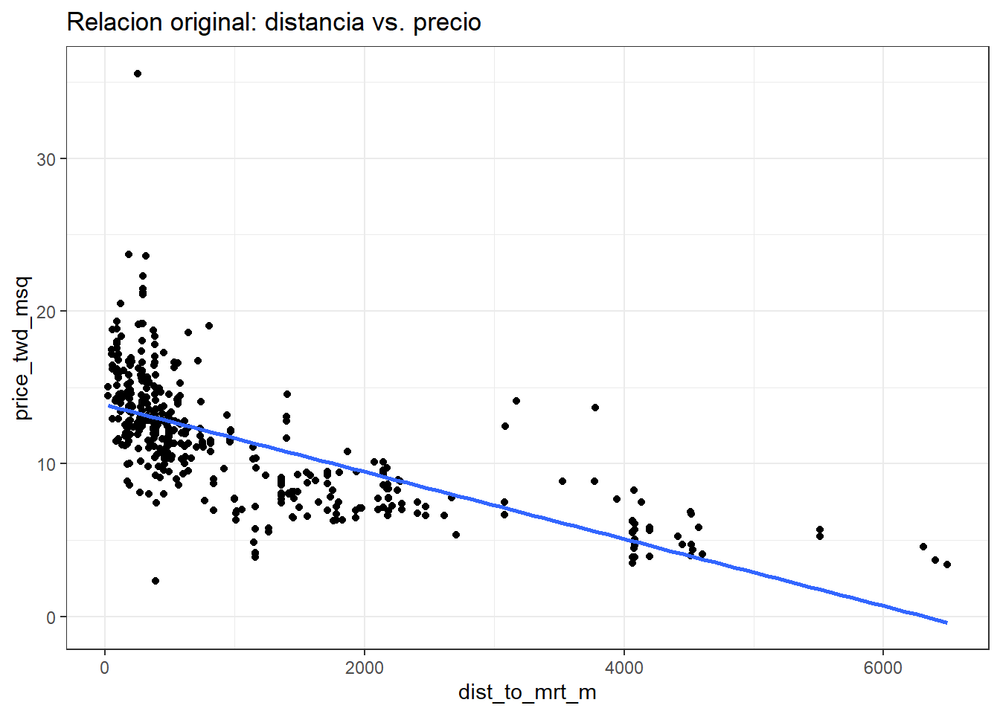
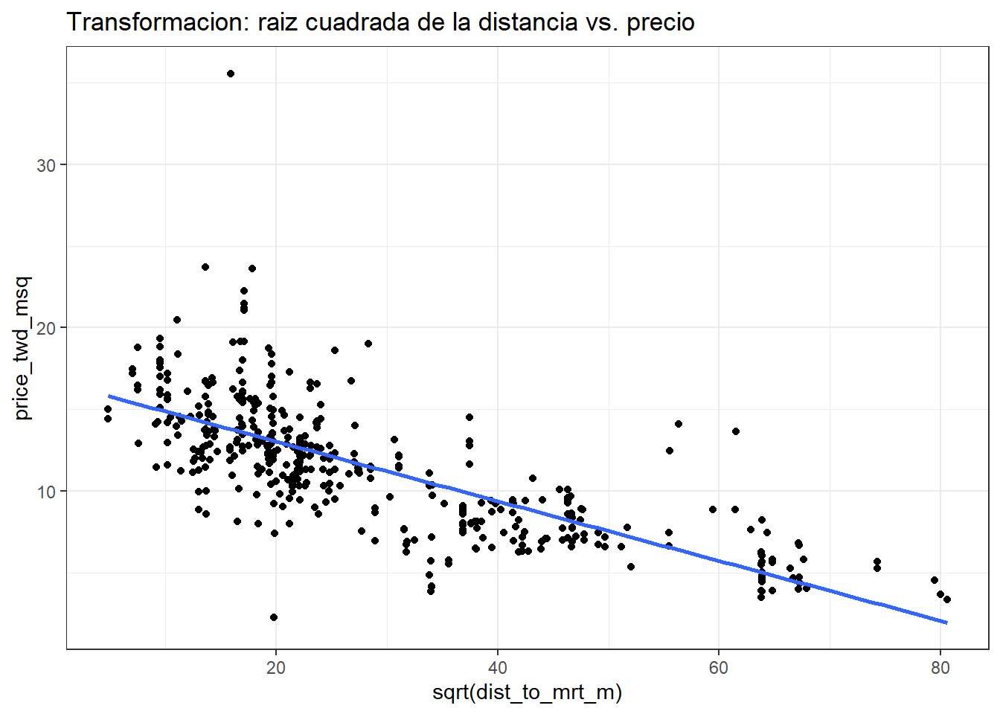
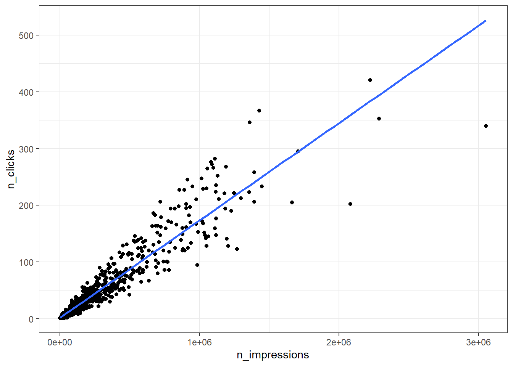
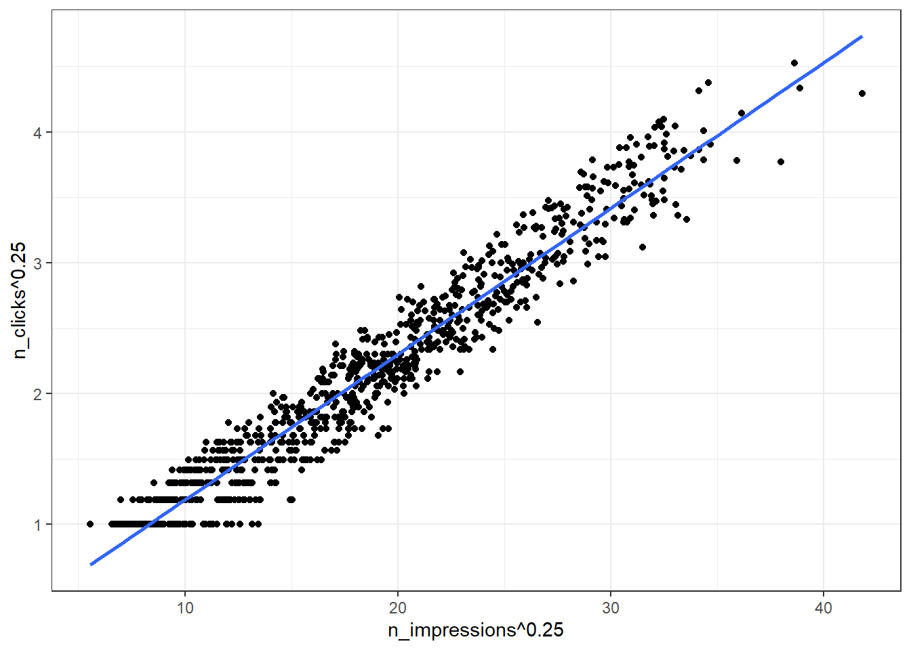

Capítulo 7 Regresión lineal simple
En muchos procesos productivos se controlan las condiciones de operación de un sistema. Es fundamental determinar cómo una variable respuesta cambia dependiendo de dichas condiciones.
Por ejemplo, en un proceso de embutido de cárnicos, la cantidad de producto empacado (en gramos) puede depender de la velocidad y la temperatura de operación de una máquina.
En la practica, por supuesto es importante
- Entender la relación entre la cantidad de producto empacado, la velocidad y la temperatura de operación.
- Garantizar el cumplimiento de las especificaciones en la cantidad de producto empacado.
- Optmizar las condiciones de operación para reducir costos y minimizar desperdicios.
El Modelo de Regresión Lineal se aplica ampliamente en ingeniería cuando se busca dar respuesta a los tres puntos anteriores.
En general, los modelos de regresión lineal permiten estudiar la relación entre:
- Una variable respuesta \(Y\).
- Un conjunto de variables controlables del proceso, denotadas como \(X_1, X_2, \dots, X_k\).
Una vez entendida esta relación, es posible predecir valores futuros de la variable respuesta a partir de valores específicos y conocidos de las variables controlables.
Variable controlable: Son aquellas variables de proceso que pueden medirse fácilmente y mantenerse fijas durante la operación.
Dependiendo del número de variables controlables, distinguimos:
Modelo de Regresión Lineal Simple (RLS):
Cuando se tiene una sola variable controlable, digamos \(x\).Modelo de Regresión Lineal Múltiple (RLM):
Cuando existen más de una variable controlable, digamos \(x_1, x_2, \dots, x_k\).- Ejemplo en procesos de embutidos:
\[ x_1 = \text{velocidad}, \quad x_2 = \text{temperatura} \]
- Ejemplo en procesos de embutidos:
7.1 El modelo de regresión lineal simple (RLS)
- Consideremos un proceso donde se tienen registros de la
Resistencia, enpsi, y laEdad, en semanas, de varias soldaduras. Los datos pueden leerse en R como se muestra a continuación:
Code
## Resistencia Edad
## 1 10.9 18.7
## 2 10.6 19.1
## 3 13.4 9.3
## 4 10.7 17.5
## 5 13.0 14.6
## 6 13.1 12.8- Con miras explorar si existe una relación entre la
Resistenciay laEdadde la soldadura, existen dos estrategias.
- Construir un gráfico de dispersión
- Calculando el coeficiente de correlación lineal muestral
- Para construir un gráfico de dispersión procedemos de la siguiente manera:

Observe que, aparentemente, cuanto mayor sea la
Edadde la soldadura menor será suResistencia. Por lo tanto, podemos decir que la relación entreEdadyResistenciaes inversamente proporcional.Ahora, miremos la correlación, suponiendo que los datos tienen comportamiento
## [1] -0.8827718- Por lo tanto, concluimos que la relación entre la
Edadde la soldadura y suResistenciaes inversamente proporcional.
7.1.1 Modelo determinista y modelo probabilístico
Para el modelo determinista:
\[ y_i = \beta_0 + \beta_1 x_i, \]
el valor observado de la Resistencia \(Y_i\) es una función lineal de la Edad \(x_i\).
La generalización apropiada de esto a un modelo probabilístico supone que el valor esperado de la Resistencia \(Y_i\) es una función lineal de la Edad \(x_i\). Si denotamos por \(E(Y_i \,|\, X = x_i)\) a la esperanza de la variable aleatoria \(Y_i\), entonces bajo el supuesto de linealidad podemos escribir:
\[ E(Y_i \,|\, X = x_i) \;=\; \beta_0 + \beta_1 x_i. \tag{7.1} \]
En la práctica, el valor observado de \(Y_i\) (Resistencia medida) se desviará inevitablemente de su valor esperado debido a la variabilidad y errores de medición.
Si esta diferencia se representa mediante la variable aleatoria \(\varepsilon_i\), con media cero por (7.1), se puede establecer:
\[ \varepsilon_i \;=\; Y_i - E(Y_i \,|\, X = x_i) \;=\; Y_i - (\beta_0 + \beta_1 x_i), \]
o de manera equivalente:
\[ Y_i = \beta_0 + \beta_1 x_i + \varepsilon_i. \tag{7.2} \]
La ecuación (7.2) es la llamada recta verdadera (o poblacional) de regresión, que describe la relación entre la Resistencia (psi) y la Edad (semanas) de las soldaduras, considerando tanto la tendencia promedio como la variabilidad aleatoria.
Supongamos que estamos interesados en conocer la relación entre la variable \(Y\) y una independente \(X\). Si la variable \(X\) toma los valores \(x_i\), entonces la ecuación de la recta poblacional de regresión expresa los correspondientes valores de \(Y_i\) como:
\[ Y_i = \beta_0 + \beta_1 x_i + \varepsilon_i, \]
donde \(\beta_0\) y \(\beta_1\) son constantes, y \(\varepsilon_i\), llamado término de error, es una variable aleatoria con media cero.7.1.2 Supuestos básicos para el modelo de regresión lineal.
Los supuestos para el modelo de regresión lineal son
Denotemos la recta verdadera de regresión por \(Y_i = \beta_0 + \beta_1 x_i + \varepsilon_i\) y asumamos que se dispone de \(n\) pares de observaciones. Suelen realizarse, al respecto, los siguientes supuestos:
- Cada \(x_i\) es un número fijo (asignado, por ejemplo, por un investigador) o es la realización de una variable aleatoria \(X_i\) independiente del término de error \(\varepsilon_i\). En el último caso, la inferencia se realiza condicionando al valor observado \(x_i\).
- Los términos de error \(\varepsilon_i\) son variables aleatorias con media 0, es decir, \(E(\varepsilon_i) = 0\), para todo \(i = 1, \ldots, n\).
- Las variables aleatorias \(\varepsilon_i\) tienen todas la misma varianza \(\sigma^2\), es decir, \(V(\varepsilon_i) = \sigma^2\), para todo \(i = 1, \ldots, n\).
- Las variables aleatorias \(\varepsilon_i\) no se hallan correlacionadas, es decir, son independientes, luego \(E(\varepsilon_i \varepsilon_j) = 0\), para todo \(i, j = 1, \ldots, n\), con \(i \neq j\).
- Los errores \(\varepsilon_i\) estan distribuidos normalmente.
Denotando la recta verdadera de regresión por \(Y_i = \beta_0 + \beta_1 x_i + \varepsilon_i\), si se cumplen los supuestos del modelo de regresión, entonces, para un valor fijo \(x_i\) de \(X\), la esperanza y varianza condicionales de \(Y_i\), dado que \(X = x_i\), vienen dadas, respectivamente, por:
\(E(Y_i \,|\, X = x_i) = \beta_0 + \beta_1 x_i \quad \text{y} \quad V(Y_i \,|\, X = x_i) = \sigma^2.\)
Demostración del teorema
-
Esperanza condicional.
Usando linealidad de la esperanza y que \(\beta_0\) y \(\beta_1\, x_i\) son constantes dado \(X=x_i\): \[ E(Y_i \mid X=x_i) = E(\beta_0 + \beta_1 x_i + \varepsilon_i \mid X=x_i) = \beta_0 + \beta_1 x_i + E(\varepsilon_i \mid X=x_i). \] Por independencia (o, en su defecto, por el supuesto \(E(\varepsilon_i\mid X)=0\)): \[ E(\varepsilon_i \mid X=x_i)=0. \] Luego, \[ \boxed{\,E(Y_i \mid X=x_i)=\beta_0+\beta_1 x_i\,}. \] -
Varianza condicional.
La varianza de una constante es cero y \(\beta_0+\beta_1 x_i\) es constante dado \(X=x_i\):\[\begin{align} \operatorname{Var}(Y_i \mid X=x_i) &= \operatorname{Var}(\beta_0 + \beta_1 x_i + \varepsilon_i \mid X=x_i) \\[6pt] &= \operatorname{Var}(\beta_0 + \beta_1 x_i \mid X=x_i) + \operatorname{Var}(\varepsilon_i \mid X=x_i) \\[6pt] &= 0 + \operatorname{Var}(\varepsilon_i \mid X=x_i). \end{align}\]
Por independencia (o por homocedasticidad condicional): \[ \operatorname{Var}(\varepsilon_i \mid X=x_i) = \operatorname{Var}(\varepsilon_i)=\sigma^2. \] Por tanto, \[ \boxed{\,\operatorname{Var}(Y_i \mid X=x_i)=\sigma^2\,}. \]
En general, el modelo de RLS surge ante la necesidad de predecir una variable respuesta \(Y\), generalmente continua, como función de una variable controlable \(X\), donde matematicamente el modelo puede expresarse como:
\[ Y_i = \beta_0 + \beta_1 X_i + \varepsilon_i, \] \[ \varepsilon_i \sim \mathcal{N}(0,\sigma^2), \] \[ \sigma^2 = \text{constante}. \]
donde \((\beta_0, \beta_1, \sigma^2)\) corresponden a los parámetros del modelo y \(\varepsilon_i\) es el error aleatorio para la observación \(i\).
- Los términos \((\beta_0, \beta_1)\) se conocen como los coeficientes del modelo.
- \(\sigma^2\) corresponde a la varianza de los errores.
En la práctica, se tiene o se toma una muestra aleatoria de tamaño \(n\) proveniente de una población o de un proceso de producción/servicios.
A partir de dicha muestra, se busca estimar los valores de \((\beta_0, \beta_1, \sigma^2)\).
7.2 Estimación de los parámetros por minimos cuadrados de \(\beta_0, \beta_1\)
Para estimar \(\beta_0\) y \(\beta_1\) se usa el método de mínimos cuadrados. Esto es, se estiman \(\beta_0\) y \(\beta_1\) tales que la suma de los cuadrados de las diferencias entre las observaciones \(y_i\) y la línea recta sea mínima.
El modelo es:
\[ y_i = \beta_0 + \beta_1 x_i + \varepsilon_i, \quad i=1,2,\ldots,n \]
El criterio de mínimos cuadrados es:
\[ S(\beta_0,\beta_1) = \sum_{i=1}^n \varepsilon_i^2=\sum_{i=1}^n (y_i - \beta_0 - \beta_1 x_i)^2 \]
Para obtener los estimadores, derivamos respecto a \(\beta_0\) y \(\beta_1\):
\[\begin{align} \frac{\partial S}{\partial \beta_0}\Big|_{\hat{\beta}_0,\hat{\beta}_1} &= -2 \sum_{i=1}^n (y_i - \hat{\beta}_0 - \hat{\beta}_1 x_i) = 0 \\[6pt] \frac{\partial S}{\partial \beta_1}\Big|_{\hat{\beta}_0,\hat{\beta}_1} &= -2 \sum_{i=1}^n (y_i - \hat{\beta}_0 - \hat{\beta}_1 x_i)x_i = 0 \end{align}\]
Estas se simplifican a las llamadas ecuaciones normales:
\[\begin{align} n\hat{\beta}_0 + \hat{\beta}_1 \sum_{i=1}^n x_i &= \sum_{i=1}^n y_i \\[6pt] \hat{\beta}_0 \sum_{i=1}^n x_i + \hat{\beta}_1 \sum_{i=1}^n x_i^2 &= \sum_{i=1}^n y_i x_i \end{align}\]
La solución de este sistema es:
\[ \hat{\beta}_0 = \bar{y} - \hat{\beta}_1 \bar{x} \]
\[ \hat{\beta}_1 = \frac{\sum_{i=1}^n y_i x_i - \frac{1}{n}\left(\sum_{i=1}^n y_i\right)\left(\sum_{i=1}^n x_i\right)} {\sum_{i=1}^n x_i^2 - \frac{1}{n}\left(\sum_{i=1}^n x_i\right)^2} \]
donde:
\[ \bar{y} = \frac{1}{n}\sum_{i=1}^n y_i, \qquad \bar{x} = \frac{1}{n}\sum_{i=1}^n x_i \]
El modelo ajustado es:
\[ \hat{y} = \hat{\beta}_0 + \hat{\beta}_1 x \]
De manera más sencilla, definimos:
\[ S_{xx} = \sum_{i=1}^n (x_i - \bar{x})^2 \qquad \text{y} \qquad S_{xy} = \sum_{i=1}^n (x_i - \bar{x})(y_i - \bar{y}) \]
Entonces, una forma conveniente de escribir la pendiente es:
\[ \hat{\beta}_1 = \frac{S_{xy}}{S_{xx}} \]
Queda de ejercicio verificar que en dicho punto crítico se alcanza un mínimo local. Sugerencia, realizar la segundas derivadas parciales.
- Demuestre que \[\sum_{i=1}^n (x_i - \overline{x})(y_i - \overline{y}) = \sum_{i=1}^n x_i y_i - n \, \overline{x} \, \overline{y}\]
- Demuestre que \[\sum_{i=1}^n (x_i - \overline{x})^2 = \sum_{i=1}^n x_i^2 - n \overline{x}^2\]
En la práctica, \(\hat{\beta}_1\) se interpreta como el cambio unitario en el valor esperado de \(Y\), es decir, en \(E[Y\mid X]\), por cada cambio unitario del factor controlable \(X\).
- Continuando con el ejemplo de los datos de soldadura, estimemos paso a paso \(\beta_0, \beta_1\):
Code
# 1. Lectura de datos
df <- read.table(file, header = TRUE)
# 2. Variables
Y <- df$Resistencia
X <- df$Edad
n <- length(X)
# 3. Medias
x_bar <- mean(X)
y_bar <- mean(Y)
# 4. Cálculo de Sxx y Sxy
Sxx <- sum((X - x_bar)^2)
Sxy <- sum((X - x_bar) * (Y - y_bar))
# 5. Estimadores de mínimos cuadrados
beta1 <- Sxy / Sxx
beta1## [1] -0.2437636## [1] 15.74275En R la función clave paara ajustar modelos de RLS es lm. Para mayor información, puede consultar la ayuda de la función escribiendo ?lm en la consola, o en la página oficial.
En general, la sintaxis es
##
## Call:
## lm(formula = Resistencia ~ Edad, data = df)
##
## Coefficients:
## (Intercept) Edad
## 15.7427 -0.2438Los resultados indican que \(\hat{\beta}_0 = 15.74\) y \(\hat{\beta}_1 = -0.244\). Por lo tanto, el modelo ajustado puede escribirse como:
\[ \widehat{\text{Resistencia}}_i = 15.74 \;-\; 0.244 \,\text{Edad}_i, \]
\[ \varepsilon_i \sim N(0, \sigma^2), \qquad \sigma^2 = \text{constante}. \]
- Se espera que, por cada semana que transcurre, la resistencia de la soldadura disminuya 0.244 psi. Es decir, \(\hat{\beta}_1 = -0.244\).
- Una soldadura nueva \((\text{Edad} = 0)\) tiene una resistencia promedio de 15.74 psi. Es decir, \(\hat{\beta}_0 = 15.74\).
Las cantidades de un compuesto químico “y”, que se disuelven en 100 gramos de agua a varias temperaturas “x”, se registran como sigue:
| x (°C) | y (gramos) |
|---|---|
| 0 | 8 |
| 0 | 6 |
| 0 | 8 |
| 15 | 12 |
| 15 | 10 |
| 15 | 14 |
| 30 | 25 |
| 30 | 21 |
| 30 | 24 |
| 45 | 31 |
| 45 | 33 |
| 45 | 28 |
| 60 | 44 |
| 60 | 39 |
| 60 | 42 |
| 75 | 48 |
| 75 | 51 |
| 75 | 44 |
- Grafique un diagrama de dispersión de los datos. ¿Parecerá plausible un modelo de regresión lineal simple?
- Encuentre las estimaciones de mínimos cuadrados de la pendiente y la ordenada al origen del modelo de regresión lineal simple.
- Estime la cantidad de compuesto químico que se disolverá en 100 gramos de agua a 50°C.
7.3 Estimación de \(\sigma^2\)
Además de estimar \(\beta_0\) y \(\beta_1\), se requiere un estimado de \(\sigma^2\) para probar hipótesis y formar intervalos de confianza pertinentes al modelo de regresión.
Ahora, se llama residuos (errores) a las desviaciones verticales
\[\varepsilon_i = y_i - \hat{y}_i, \quad i = 1, 2, \ldots, n\]
de la recta estimada.
Cuando no se puede usar información previa, el estimado de \(\sigma^2\) se obtiene de la suma de cuadrados de los errores (SSE):
\[ SSE = S = \sum_{i=1}^n \varepsilon_i^2 = \sum_{i=1}^n (y_i - \hat{y}_i)^2 \tag{7.3} \]
Si sustituimos \(\hat{y}_i = \hat{\beta_0}+\hat{\beta_1}x_i\) en la ecuación (7.3) tenemos que
\[\begin{align} SSE &= \sum_{i=1}^n (y_i - \hat{y}_i)^2 \\[6pt] &= \sum_{i=1}^n \left( y_i - \hat{\beta}_0 - \hat{\beta}_1 x_i \right)^2 \\[6pt] &= \sum_{i=1}^n \left( y_i - \bar{y} + \hat{\beta}_1 \bar{x} - \hat{\beta}_1 x_i \right)^2 \\[6pt] &= \sum_{i=1}^n \left[ (y_i - \bar{y}) - \hat{\beta}_1 (x_i - \bar{x}) \right]^2 \\[6pt] &= \sum_{i=1}^n (y_i - \bar{y})^2 - 2\hat{\beta}_1 \sum_{i=1}^n (y_i - \bar{y})(x_i - \bar{x}) + \hat{\beta}_1^2 \sum_{i=1}^n (x_i - \bar{x})^2 \\[6pt] &= SST - 2\hat{\beta}_1 S_{xy} + \hat{\beta}_1^2 S_{xx} \end{align}\]
Como \(\hat{\beta_1}=\frac{S_{xy}}{S_{xx}}\) se sigue que
\[\begin{align} SSE &= SST - 2\hat{\beta}_1 S_{xy} + \hat{\beta}_1^2 S_{xx} \\[6pt] &= SST - 2\hat{\beta}_1 S_{xy} + \hat{\beta}_1 \left(\frac{S_{xy}}{S_{xx}}\right) S_{xx} \\[6pt] &= SST - 2\hat{\beta}_1 S_{xy} + \hat{\beta}_1 S_{xy} \\[6pt] &= SST - \hat{\beta}_1 S_{xy}, \end{align}\]
donde
\[\begin{align} SST &= \sum_{i=1}^n \left(y_i - \bar{y}\right)^2, \\[6pt] SSE &= \sum_{i=1}^n \left(y_i - \hat{y}_i\right)^2. \end{align}\]
La suma de cuadrados de residuales tiene \(n - 2\) grados de libertad, porque dos grados de libertad se asocian con los estimados \(\hat{\beta}_0\) y \(\hat{\beta}_1\) que se usan para obtener \(\hat{y}_i\).
Por el teorema de MSA y MSE insesgado de \(\sigma^2\), sabemos que el valor esperado de \(SSE\) es:
\[ E(SSE) = (n-2)\sigma^2, \]
por lo que un estimador insesgado de \(\sigma^2\) es:
\[ \hat{\sigma}^2 = \frac{SSE}{n-2} = MSE \]
La cantidad \(MSE\) se llama cuadrado medio residual. La raíz cuadrada de \(\hat{\sigma}^2\) se llama, a veces, el error estándar de la regresión (RSE), y tiene las mismas unidades que la variable respuesta \(y\).
Ya que \(\hat{\sigma}^2\) depende de la suma de cuadrados de residuales, cualquier violación de las hipótesis sobre los errores del modelo, o cualquier especificación equivocada de la forma del modelo, pueden dañar la utilidad de \(\hat{\sigma}^2\) como estimador de \(\sigma^2\).
Como \(\sigma^2\) se calcula con los residuales del modelo de regresión, se dice que es un estimador de \(\sigma^2\) dependiente del modelo.
Finalmente, el modelo de Regresión Lineal Simple (RLS) estimado es
\[\begin{align} \hat{Y}_i &= \hat{\beta}_0 + \hat{\beta}_1 X_i, \\[6pt] \varepsilon_i &\sim N(0, \hat{\sigma}^2), \\[6pt] \hat{\sigma}^2 &= \text{constante}. \end{align}\]
Otra forma de expresarlo es
\[\begin{align} \hat{Y}_i &\sim N(\hat{\mu}_i, \hat{\sigma}^2), \\[6pt] \hat{\mu}_i &= \hat{\beta}_0 + \hat{\beta}_1 X_i. \end{align}\]
- A partir del modelo ajustado es posible predecir el valor esperado de \(Y\) para valores conocidos de \(X\), es decir, si fijamos un valor \(x_0\) del factor \(X\), podemos calcular:
\[ E[Y \mid X = x_0]. \]
- Continuando con el ejemplo de soldaduras. Estimemos el \(\sigma\). Haciendolo paso a paso
Code
# 1. Cargar datos
datos <- read.table("data/data_rls.txt", header = TRUE)
x <- datos$Edad
y <- datos$Resistencia
# 2. Ajustar el modelo de regresión lineal simple
modelo <- lm(Resistencia ~ Edad, data = datos)
# 3. Los coeficientes son
b0 <- modelo$coefficients[1]
b1 <- modelo$coefficients[2]
# 4. Ajustados y residuos
yhat <- b0 + b1 * x
e <- y - yhat
# 5. SSE por definición
SSE <- sum(e^2)
# Otra forma de btener los residuos
residuos <- resid(modelo)
SSE_otro <- sum(residuos^2)
# 6. Calcular MSE
n <- nrow(datos) # número de observaciones
gl <- n - 2 # grados de libertad
MSE <- SSE / gl
MSE## [1] 0.3491253## [1] 0.5908683Cuando ajustamos el modelo con la función modelo <- lm(Resistencia ~ Edad, data = datos) para obtener el RSE de la siguiente forma
## [1] 0.5908683A partir de este resultado podemos concluir que \(\hat{\sigma}=0.591\). Por lo tanto, \(MSE=0.591^2=0.349\). Finalmente, el modelo ajustado puede expresarse como
\[\begin{align} \widehat{\text{Resistencia}}_i &\sim N(\hat{\mu}_i, \hat{\sigma}^2) \\[6pt] \hat{\mu}_i &= 15.743 - 0.244 \, \text{Edad}_i \\[6pt] \hat{\sigma}^2 &= 0.591^2 = 0.349 \end{align}\]
7.4 Coeficiente de determinación
El Coeficiente de Determinación (\(R^2\)) es una medida estadística que indica la proporción de la variabilidad total de la variable dependiente \(Y\) que es explicada por el modelo de regresión.
Se define como:
\[ R^2 = 1 - \dfrac{SSE}{SST} \]
Su valor está comprendido entre 0 y 1:
- \(R^2 \approx 1\): el modelo explica gran parte de la variabilidad de los datos.
- \(R^2 \approx 0\): el modelo explica muy poca variabilidad.
El coeficiente de determinación puede escribirse de un modo diferente al introducir una tercera suma de cuadrados, la suma de cuadrados de regresión.
\[\begin{align} SSR &= \sum_{i=1}^{n} (\hat{y}_i - \bar{y})^2 = \sum (\hat{y}_i - \bar{y})^2 = \sum \left( \hat{\beta}_0 + \hat{\beta}_1 x_i - \bar{y} \right)^2 \\[6pt] &= \sum \left( -\hat{\beta}_1 \bar{x} + \hat{\beta}_1 x_i \right)^2 = \hat{\beta}_1^2 \sum (x_i - \bar{x})^2 = \hat{\beta}_1 S_{xy} = SST - SSE \end{align}\]
Así,
\[\begin{align} R^2 = 1 - \frac{SSE}{SST} = \frac{SST - SSE}{SST} = \frac{SSR}{SST} = \frac{\hat{\beta}_1 S_{xy}}{S_{yy}} \end{align}\]
- Continuando con el ejemplo de los datos de soldadura, calculemos paso a paso el coeficiente de determinación
Code
# 1. Lectura de datos
file <- "data/data_rls.txt"
df <- read.table(file, header = TRUE)
# 2. Variables
Y <- df$Resistencia
X <- df$Edad
n <- length(X)
# 3. Medias
x_bar <- mean(X)
y_bar <- mean(Y)
# 4. Cálculo de Sxx y Sxy
Sxx <- sum((X - x_bar)^2)
Sxy <- sum((X - x_bar) * (Y - y_bar))
# 5. Estimadores de mínimos cuadrados
beta1 <- Sxy / Sxx
# 6. Estimador beta0
beta0 <- y_bar - beta1 * x_bar
# 7. Valores ajustados
Y_hat <- beta0 + beta1 * X
# 8. Sumas de cuadrados
SST <- sum((Y - y_bar)^2)
SSE <- sum((Y - Y_hat)^2)
SSR <- SST - SSE # también se puede calcular como sum((Y_hat - y_bar)^2)
# 9. Coeficiente de determinación
R2 <- SSR / SST
R2## [1] 0.7792861- Otra forma de calcular el coefiente de determinación es
## [1] 0.7792861- Ahora, usando la función
lm
Code
## [1] 0.7792861Todos los meses, durante cierto período, se midieron la temperatura promedio en °C (x) y el número de libras de vapor (y) consumidas por cierta planta química. La recta de mínimos cuadrados calculada de los datos resultantes es:
\(\hat{y} = 245.82 + 1.13x\)
- Pronostique el número de libras del vapor consumido en un mes donde la temperatura promedio es 65 °C.
- Si dos meses difieren en sus temperaturas promedio por 5 °C, ¿cuánto predice que será diferente el número de libras del vapor consumido?
En un estudio de la relación entre la dureza de Brinell (x) y la tensión de compresión en ksi (y) de elementos de cobre extruidos en frío, la recta de mínimos cuadrados fue:
\(\hat{y} = -196.32 + 2.42x\)
- Pronostique la fuerza de tensión de un elemento cuya dureza de Brinell es 102.7.
- Si dos muestras difieren en su dureza de Brinell en 3, ¿cuánto predice que serán diferentes sus tensiones de compresión?
Una recta de mínimos cuadrados está ajustando a un conjunto de puntos. Si la suma total de los cuadrados es \(\sum (y_i - \bar{y})^2 = 9615\), y la suma de los cuadrados de los errores es \(\sum (y_i - \hat{y}_i)^2 = 1450\), calcule el coeficiente de determinación \(R^2\).
Una recta de mínimos cuadrados está ajustando un conjunto de puntos. Si la suma total de cuadrados es \(\sum (y_i - \bar{y})^2 = 181.2\), y la suma de los cuadrados de los errores es \(\sum (y_i - \hat{y}_i)^2 = 33.9\), calcule el coeficiente de determinación \(R^2\).
Con los datos de las estaturas de Galton, la recta de mínimos cuadrados para pronosticar la longitud del antebrazo (y) de la estatura (x) es:
\(\hat{y} = -0.2967 + 0.2738x\)
- Pronostique la longitud del antebrazo de un hombre cuya estatura es 70 pulgadas.
- ¿Qué estatura debe tener un hombre con el propósito de que se pronostique que su longitud de antebrazo sea de 19 pulgadas?
- Todos los hombres en cierto grupo tienen 72 pulgadas de estatura. Explique por qué la pendiente de la recta de mínimos cuadrados es menos de 1 si ambos, las estaturas y los antebrazos se miden en las mismas unidades (pulgadas).
Los adelantos tecnológicos han hecho posible fabricar botes inflables. Estos botes de goma inflables, que pueden enrollarse formando un paquete no mayor que una bolsa de golf, tienen tamaño suficiente para dos pasajeros con su equipo de excursionismo.
La revista Canoe & Kayac probó los botes de nueve fabricantes para ver su funcionamiento en un recorrido de tres días. Uno de los criterios de evaluación fue su capacidad para equipaje que se evaluó utilizando una escala de 4 puntos, siendo 1 la puntuación más baja y 4 la puntuación más alta.
Los datos siguientes muestran la evaluación que obtuvieron respecto a capacidad para equipaje y los precios de los botes (Canoe Kayak, marzo 2003).
| Bote | Capacidad para equipaje | Precio ($) |
|---|---|---|
| S14 | 4 | 1595 |
| Orinoco | 4 | 1399 |
| Outside Pro | 4 | 1890 |
| Explorer 380X | 3 | 795 |
| River XK2 | 2.5 | 600 |
| Sea Tiger | 4 | 1995 |
| Maverik II | 3 | 1205 |
| Starlite 100 | 2 | 583 |
| Fat Pack Cat | 3 | 1048 |
- Trace el diagrama de dispersión de estos datos empleando la capacidad para equipaje como variable independiente.
- ¿Qué indica el diagrama de dispersión del inciso a) respecto a la relación entre capacidad para equipaje y precio?
- A través de los puntos de los datos trace una línea recta para aproximar la relación lineal entre capacidad para equipaje y precio.
- Utilice el método de mínimos cuadrados para obtener la ecuación de regresión estimada.
- Dé una interpretación de la pendiente de la ecuación de regresión estimada.
- Diga cuál será el precio de un bote que tenga 3 en la evaluación de su capacidad para equipaje.
Wageweb realiza estudios sobre datos salariales y presenta resúmenes de éstos en su sitio de la Red. Basándose en datos salariales desde el 1 de octubre de 2002, Wageweb publicó que el salario anual promedio de los vicepresidentes de ventas era $142 111 con una gratificación anual promedio de $15 432 (Wageweb.com, 13 de marzo de 2003).
Suponga que los datos siguientes sean una muestra de salarios y bonos anuales de 10 vicepresidentes de ventas. Los datos se dan en miles de dólares.
| Vicepresidente | Salario | Gratificación |
|---|---|---|
| 1 | 135 | 12 |
| 2 | 115 | 14 |
| 3 | 147 | 16 |
| 4 | 167 | 22 |
| 5 | 165 | 24 |
| 6 | 176 | 29 |
| 7 | 98 | 7 |
| 8 | 136 | 17 |
| 9 | 163 | 21 |
| 10 | 119 | 11 |
- Trace un diagrama de dispersión con estos datos tomando como variable independiente los salarios.
- ¿Qué indica el diagrama de dispersión del inciso a) acerca de la relación entre salario y gratificación?
- Use el método de mínimos cuadrados para obtener la ecuación de regresión estimada.
- Dé una interpretación de la ecuación de regresión estimada.
- ¿Cuál será la gratificación de un vicepresidente que tenga un salario anual de $120 000?
Se midió el peso inercial (en toneladas) y el ahorro de combustible (en milla/galón) para una muestra de siete camiones de diésel. En la tabla siguiente se presentan los resultados. (De “In—Use Emissions from Heavy—Duty Diesel Vehicles,” J. Yanowitz, tesis de doctorado, Escuela de Minas de Colorado, 2001.)
| Peso | Millaje |
|---|---|
| 8.00 | 7.69 |
| 24.50 | 4.97 |
| 27.00 | 4.56 |
| 14.50 | 6.49 |
| 28.50 | 4.34 |
| 12.75 | 6.24 |
| 21.25 | 4.45 |
- Construya un diagrama de puntos del millaje (y) contra el peso (x). Compruebe que un modelo lineal es adecuado.
- Calcule la recta de mínimos cuadrados para pronosticar el millaje a partir del peso.
- Si los dos camiones son diferentes en peso por cinco toneladas, ¿cuánto predeciría que son diferentes sus millajes?
- Pronostique el millaje para camiones con un peso de 15 toneladas.
- ¿Cuáles son las unidades de la pendiente estimada \(\hat{\beta}_1\)?
- ¿Cuáles son las unidades del intercepto estimado \(\hat{\beta}_0\)?
El procesamiento de carbón natural implica el “lavado” durante el cual se elimina ceniza de carbón (no orgánico, material no combustible). El artículo “Quantifying Sampling Precision for Coal Ash Using Gy’s Discrete Model of the Fundamental Error” (Journal of Coal Quality, 1989, 33-39) proporciona los datos relacionados con los porcentajes de ceniza con la densidad de una partícula de carbón.
Se midió el promedio de porcentaje de ceniza para cinco densidades de partículas de carbón. En la tabla siguiente se presentan los datos:
| Densidad (g/cm³) | Porcentaje de ceniza |
|---|---|
| 1.25 | 1.93 |
| 1.325 | 4.63 |
| 1.375 | 8.95 |
| 1.45 | 15.05 |
| 1.55 | 23.31 |
- Construya un diagrama de dispersión del porcentaje de ceniza (y) contra la densidad (x). Verifique que es adecuado un modelo lineal.
- Calcule la recta de mínimos cuadrados para pronosticar porcentaje de ceniza a partir de la densidad.
- Si las dos partículas de carbón difieren en densidad por 0.1 g/cm³, ¿cuánto predeciría que será diferente el porcentaje de ceniza?
- Pronostique el porcentaje de ceniza para partículas con 1.40 g/cm³.
- Calcule los valores ajustados.
- Calcule los residuos. ¿Qué punto tiene el residuo con magnitud mayor?
- Calcule la correlación entre la densidad y el porcentaje de ceniza.
- Haga la suma de cuadrados de regresión, la suma de cuadrados del error y la suma total de cuadrados.
- Divida la suma de cuadrados de regresión entre la suma total de cuadrados. ¿Cuál es la relación entre esta cantidad y el coeficiente de correlación?
Un ingeniero quiere pronosticar el valor de y cuando x = 4.5 utilizando el siguiente conjunto de datos:
| x | y | z = ln y | x | y | z = ln y |
|---|---|---|---|---|---|
| 1 | 0.2 | -1.61 | 6 | 2.3 | 0.83 |
| 2 | 0.3 | -1.20 | 7 | 2.9 | 1.06 |
| 3 | 0.5 | -0.69 | 8 | 4.5 | 1.50 |
| 4 | 0.5 | -0.69 | 9 | 8.7 | 2.16 |
| 5 | 1.3 | 0.26 | 10 | 12.0 | 2.48 |
- Construya un diagrama de dispersión de los puntos (x, y).
- ¿La recta de mínimos cuadrados se debe utilizar para pronosticar el valor de y cuando x = 4.5? Si es así, calcule la recta de mínimos cuadrados y el valor pronosticado. Si no, explique.
- Construya un diagrama de dispersión de los puntos (x, z), donde z = ln y.
- Utilice la recta de mínimos cuadrados para pronosticar el valor de z cuando x = 4.5. ¿Éste es un método adecuado de pronóstico? Explique por qué sí o no.
- Sea ẑ el valor pronosticado de z calculado en el inciso d). Sea ŷ = eẑ. Explique por qué ŷ es un pronosticador razonable del valor de y cuando x = 4.5.
7.5 Propiedades de estimadores de mínimos cuadrados
Sean \(\hat{\beta}_0\) y \(\hat{\beta}_1\) los estimadores de mínimos cuadrados de los parámetros en un modelo de regresión lineal simple
\[\begin{align} y_i &= \beta_0 + \beta_1 x_i + \varepsilon_i, \\[6pt] \varepsilon_i &\sim N(0, \sigma^2). \end{align}\]
Entonces- Insesgado: \[ E(\hat{\beta}_1) = \beta_1, \quad E(\hat{\beta}_0) = \beta_0 \]
- Varianzas: \[ \hat{\sigma}^2_{\hat{\beta}_1}=Var(\hat{\beta}_1) = \frac{\sigma^2}{S_{xx}}, \quad \hat{\sigma}^2_{\hat{\beta}_0}= Var(\hat{\beta}_0) = \sigma^2 \left(\frac{1}{n} + \frac{\bar{x}^2}{S_{xx}}\right) \] donde \(S_{xx} = \sum_{i=1}^{n} (x_i - \bar{x})^2\).
- Distribuciones: \[ \hat{\beta}_1 \sim N\left(\beta_1, \frac{\sigma^2}{S_{xx}}\right), \quad \hat{\beta}_0 \sim N\left(\beta_0, \sigma^2\left(\frac{1}{n} + \frac{\bar{x}^2}{S_{xx}}\right)\right) \]
Demostración del teorema
Inicialmente probemos que \(E(\hat{\beta}_1) = \beta_1\). En efecto
\[ \hat{\beta}_1=\frac{S_{xy}}{S_{xx}}, \qquad S_{xy}=\sum_{i=1}^n (x_i-\bar x)(y_i-\bar y), \qquad S_{xx}=\sum_{i=1}^n (x_i-\bar x)^2>0. \]
Ahora,
\[\begin{align} \sum_{i=1}^n (x_i - \bar{x}) &= \sum_{i=1}^n x_i - \sum_{i=1}^n \bar{x} = \sum_{i=1}^n x_i - n\bar{x} \\[6pt] &= \sum_{i=1}^n x_i - n\left(\tfrac{1}{n}\sum_{i=1}^n x_i\right)= \sum_{i=1}^n x_i - \sum_{i=1}^n x_i = 0. \end{align}\]
Como \(\sum_{i=1}^n (x_i-\bar x)=0\) se tiene que
\[\begin{align} S_{xy} &= \sum_{i=1}^n (x_i-\bar x)y_i - \bar y \sum_{i=1}^n (x_i-\bar x) \\ &= \sum_{i=1}^n (x_i-\bar x)\, y_i, \end{align}\]
de modo que
\[ \hat{\beta}_1=\frac{\sum_{i=1}^n (x_i-\bar x)\, y_i}{S_{xx}}. \]
Sustituyendo el modelo \(y_i=\beta_0+\beta_1 x_i+\varepsilon_i\) tenemos que
\[\begin{align} \sum_{i=1}^n (x_i-\bar x) y_i &= \sum_{i=1}^n (x_i-\bar x)(\beta_0+\beta_1 x_i+\varepsilon_i) \\ &= \beta_0 \sum_{i=1}^n (x_i-\bar x) + \beta_1 \sum_{i=1}^n (x_i-\bar x)x_i + \sum_{i=1}^n (x_i-\bar x)\varepsilon_i \\ &= 0 + \beta_1 \sum_{i=1}^n (x_i-\bar x)x_i + \sum_{i=1}^n (x_i-\bar x)\varepsilon_i\\ &= \beta_1 \sum_{i=1}^n (x_i-\bar x)x_i + \sum_{i=1}^n (x_i-\bar x)\varepsilon_i. \end{align}\]
Por otro lado,
\[\begin{align} \sum_{i=1}^n (x_i - \bar{x})x_i &= \sum_{i=1}^n \big[(x_i - \bar{x})(x_i - \bar{x} + \bar{x})\big] \\[6pt] &= \sum_{i=1}^n (x_i - \bar{x})^2 + \bar{x}\sum_{i=1}^n (x_i - \bar{x}) \\[6pt] &= \sum_{i=1}^n (x_i - \bar{x})^2 + \bar{x}\cdot 0 \\[6pt] &= \sum_{i=1}^n (x_i - \bar{x})^2 \\[6pt] &= S_{xx}. \end{align}\]
Usando la identidad \(\sum_{i=1}^n (x_i-\bar x)x_i = S_{xx}\) se sigue que
\[ \sum_{i=1}^n (x_i-\bar x) y_i = \beta_1 S_{xx} + \sum_{i=1}^n (x_i-\bar x)\varepsilon_i. \]
Por tanto \[ \hat{\beta}_1 = \frac{\beta_1 S_{xx} + \sum_{i=1}^n (x_i-\bar x)\varepsilon_i}{S_{xx}} = \beta_1 + \frac{\sum_{i=1}^n (x_i-\bar x)\varepsilon_i}{S_{xx}}. \]
Como \(\hat{\beta}_1\) se construye con los \(x_i\) y los \(\varepsilon_i\), al condicionar en \(X\) quitamos la incertidumbre de los \(x_i\) y nos quedamos solo con la parte aleatoria de los errores, por lo que
\[\begin{align} E[\hat{\beta}_1 \mid X] &= \beta_1 + \frac{\sum_{i=1}^{n} (x_i-\bar x) E[\varepsilon_i]}{S_{xx}} = \beta_1 + \frac{0}{S_{xx}} = \beta_1. \end{align}\]
Como la igualdad es cierta para cualquier conjunto de valores \(X\), se concluye que
\[ \boxed{\,E(\hat{\beta}_1)=\beta_1\,} \]
Ahora, probemos que \(E(\hat{\beta}_0)=\beta_0\). En efecto, sabemos que \(\hat{\beta}_0 = \overline{y} - \hat{\beta}_1 \overline{x}\), por lo que
\[\begin{align} E[\hat{\beta}_0 \mid X] &= E[\overline{y} \mid X] - E[\hat{\beta}_1 \mid X]\overline{x} \\[6pt] &= E[\big(\beta_0 + \beta_1 \overline{x}\big) \mid X] - E[\hat{\beta}_1 \mid X]\overline{x} \\[6pt] &= \big(\beta_0 + \beta_1 \overline{x}\big) - \beta_1 \overline{x} \\[6pt] &= \beta_0. \end{align}\]
Y como esta igualdad vale para cualquier conjunto de valores \(X\)
\[ \boxed{E(\hat{\beta}_0) = \beta_0} \]
Por otro lado, probemos que \(V(\hat{\beta}_1) = \frac{\sigma^2}{S_{xx}}\). En efecto; anteriormente probamos que
\[\begin{align} \hat{\beta}_1 = \beta_1 + \frac{\sum_{i=1}^{n} (x_i - \bar{x})\varepsilon_i}{S_{xx}}, \end{align}\]
Como \(Var(\beta_1)=0\), ya que \(\beta_1\) es constante entonces
\[\begin{align} Var(\hat{\beta}_1\mid X) &= Var\!\left(\frac{\sum_{i=1}^{n} (x_i - \bar{x})\varepsilon_i}{S_{xx}}\mid X\right). \end{align}\]
Sabemos que los errores son independientes, \(E(\varepsilon_i)=0\) y \(Var(\varepsilon_i)=\sigma\) por lo que
\[\begin{align} Var(\hat{\beta}_1\mid X) &= \frac{1}{S_{xx}^2} \; Var\!\left(\sum_{i=1}^{n} (x_i - \bar{x})\varepsilon_i\mid X\right)= \frac{1}{S_{xx}^2}Var\!\left(\sum_{i=1}^{n} (x_i - \bar{x})\varepsilon_i\mid X\right) \\[6pt] &= \frac{1}{S_{xx}^2}\sum_{i=1}^{n} (x_i - \bar{x})^2 Var(\varepsilon_i) = \frac{1}{S_{xx}^2}\sigma^2 \sum_{i=1}^{n} (x_i - \bar{x})^2 \\[6pt] &= \frac{1}{S_{xx}^2}\sigma^2 S_{xx}=\frac{\sigma^2}{S_{xx}} \end{align}\]
En consecuencia
\[ \boxed{Var(\hat{\beta}_1)= \frac{\sigma^2}{S_{xx}}} \]
Probemos que \(V(\hat{\beta}_0) = \sigma^2 \left(\frac{1}{n} + \frac{\bar{x}^2}{S_{xx}}\right)\). En efecto
\[\begin{align} Var(\hat{\beta}_0\mid X) &= Var(\bar{y} - \hat{\beta}_1 \bar{y}\mid X) \\[6pt] &= Var(\bar{y}\mid X) + \bar{x}^2 Var(\hat{\beta}_1\mid X) - 2\bar{x}\,Cov(\bar{y},\hat{\beta}_1\mid X). \end{align}\]
Pruebe \(Cov(\bar{y},\hat{\beta}_1\mid X) = 0\), entonces
\[\begin{align} Var(\hat{\beta}_0\mid X) &= Var(\bar{y}\mid X) + \bar{x}^2 Var(\hat{\beta}_1\mid X)\\[6pt] &= \frac{\sigma^2}{n} + \bar{x}^2 \frac{\sigma^2}{S_{xx}}\\[6pt] &=\sigma^2\left(\frac{1}{n}+\frac{\bar{x}^2}{S_{xx}}\right) \end{align}\]
Por lo tanto
\[ \boxed{Var(\hat{\beta}_0)= \sigma^2\left(\frac{1}{n}+\frac{\bar{x}^2}{S_{xx}}\right)}\quad\square \]
7.6 Estimación de invervalos de confianza y prueba de hipótesis para \(\beta_1, \beta_0\) y \(\sigma^2\)
Al utilizar un modelo de Regresión Lineal Simple (RLS) queremos estar seguros de que el modelo ajustado es considerablemente mejor que no tener dicho modelo.
Esto equivale a determinar si la contribución del factor controlable \(X\) para predecir \(E[Y \mid X = x_0]\) es sustancial.
Formalmente, esto se traduce en realizar una prueba de significancia global para el modelo.
La prueba de significancia global puede realizarse de dos maneras en RLS: 1. A través de un procedimiento de pruebas de hipótesis basado en la distribución \(t\) de Student. 2. Utilizando los resultados de la Tabla ANOVA.
7.6.1 Intervalo de confianza para \(\beta_1\)
En un modelo de regresión lineal simple, queremos estimar el verdadero valor de la pendiente \(\beta_1\).
Para ello construimos un intervalo de confianza (IC) basado en la distribución muestral del estimador \(\hat{\beta}_1\) y en las propiedades de los estimadores de mínimos cuadrados
- El estadístico de prueba de la variable estandarizada es:
\[ T = \frac{\hat{\beta}_1 - \beta_1}{\widehat{\sigma}_{\hat{\beta}_1}} \sim t_{(n-2)} \]
donde \(t_{(n-2)}\) es la distribución t de Student con \(n-2\) grados de libertad.
cuya expresión de probabilidad definida de un intervalo de confianza es
\[ P\left(-t_{\alpha/2,\,n-2} < \frac{\hat{\beta}_1 - \beta_1}{\widehat{\sigma}_{\hat{\beta}_1}} < t_{\alpha/2,\,n-2}\right) = 1-\alpha \]
- Reordenando la desigualdad y despejando \(\beta_1\), obtenemos el intervalo para la pendiente
\[ \hat{\beta}_1 - t_{\alpha/2,\,n-2}\,\sqrt{\frac{\hat{\sigma}^2}{S_{xx}}} \;<\; \beta_1 \;<\; \hat{\beta}_1 + t_{\alpha/2,\,n-2}\,\sqrt{\frac{\hat{\sigma}^2}{S_{xx}}} \tag{6.1} \]
donde
- \(\hat{\beta}_1\): estimador de la pendiente.
- \(t_{\alpha/2,\,n-2}\): valor crítico de la \(t\) de Student.
- \(\hat{\sigma}^2\): estimador de la varianza residual.
- \(S_{xx} = \sum (x_i - \bar{x})^2\): suma de cuadrados de la variable explicativa.
Con este intervalo, afirmamos que con una confianza \((1-\alpha)100\%\), la verdadera pendiente \(\beta_1\) se encuentra dentro de los límites calculados.
Cuando \(n-2>30\), podemos aproximar la distribución \(t_{n-2}\) a la distribución normal estándar. En R, utilizaríamos la pnorm() en lugar de pt(). Para más detalles, escriba ?pnorm en la consola del R.
7.6.2 Prueba de hipótesis para \(\beta_1\)
El par de hipótesis más común en la regresión lineal simple se plantea sobre la pendiente \(\beta_1\):
\[ H_0: \beta_1 = 0 \quad \text{vs} \quad H_1: \beta_1 \neq 0 \]
La interpretación de la hipótesis nula nos queda
- Si \(H_0\) es verdadera, entonces \(E(Y \mid x) = \beta_0\), es decir, la variable explicativa \(x\) no aporta información sobre la variable dependiente \(Y\).
- La prueba se conoce como prueba de utilidad del modelo: verifica si la pendiente es significativamente distinta de cero.
Si \(H_0\) es rechazada (para \(\alpha\) pequeña), confirmamos la utilidad del modelo. Esto suele ocurrir cuando el coeficiente de determinación \(R^2\) es grande.
El procedimiento de prueba es
Planteamiento de hipótesis
\[ H_0 : \beta_1 = 0 \quad \text{vs} \quad H_1 : \beta_1 \neq 0 \]Cálculo del estadístico de prueba
\[ t_0 = \frac{\hat{\beta}_1}{\sqrt{\dfrac{\hat{\sigma}^2}{S_{xx}}}} \]Cálculo del valor p
\[ P = 2P(T > |t_0|), \quad T \sim t_{(n-2)} \]
de alli la decisión
- Si \(P < \alpha\), rechazamos \(H_0\) → la variable explicativa \(x\) aporta información significativa y el modelo es útil.
- Si \(P \geq \alpha\), no rechazamos \(H_0\) → no hay evidencia suficiente para afirmar que \(\beta_1 \neq 0\).
7.6.3 Intervalo de confianza para \(\beta_0\)
En la regresión lineal simple, el estimador del intercepto es:
\[ \hat{\beta}_0 = \bar{y} - \hat{\beta}_1 \bar{y} \]
Al igual que con la pendiente, el estadístico de prueba de la variable estandarizada es:
\[ T = \frac{\hat{\beta}_0 - \beta_0}{\widehat{\sigma}_{\hat{\beta}_0}} \sim t_{(n-2)} \]
- El error estándar de \(\hat{\beta}_0\) es:
\[ \widehat{\sigma}_{\hat{\beta}_0} = \sqrt{\hat{\sigma}^2 \left( \frac{1}{n} + \frac{\bar{x}^2}{S_{xx}} \right)} \]
donde
- \(n\): número de observaciones.
- \(\bar{x}\): media de la variable explicativa.
- \(S_{xx} = \sum (x_i - \bar{x})^2\).
- \(\hat{\sigma}^2\): estimador de la varianza residual.
- A partir de la expresión de probabilidad, se obtiene que el intervalo de confianza \((1-\alpha)100\%\) para \(\beta_0\) es:
\[ \hat{\beta}_0 - t_{\alpha/2,\,n-2}\,\sqrt{\hat{\sigma}^2 \left( \tfrac{1}{n} + \tfrac{\bar{x}^2}{S_{xx}} \right)} \;<\; \beta_0 \;<\; \hat{\beta}_0 + t_{\alpha/2,\,n-2}\,\sqrt{\hat{\sigma}^2 \left( \tfrac{1}{n} + \tfrac{\bar{x}^2}{S_{xx}} \right)} \] donde
- \(\hat{\beta}_0\): estimador del intercepto.
- \(t_{\alpha/2,\,n-2}\): valor crítico de la distribución t de Student.
- \(\widehat{\sigma}_{\hat{\beta}_0}\): error estándar del intercepto.
Por lo que el intervalo nos da un rango en el cual se encuentra con probabilidad \((1-\alpha)\) el verdadero valor del intercepto \(\beta_0\), es decir, el valor esperado de \(Y\) cuando \(X = 0\).
7.6.4 Prueba de hipótesis para \(\beta_0\)
El contraste de hipótesis más común sobre el intercepto \(\beta_0\) es
\[ H_0 : \beta_0 = 0 \quad \text{vs} \quad H_1 : \beta_0 \neq 0 \]
La interpretación de la hipótesis nula nos queda
- Si \(H_0\) es verdadera, el modelo pasaría por el origen.
- En este caso, el valor esperado de \(Y\) cuando \(X=0\) sería exactamente cero.
- Rechazar \(H_0\) sugiere que existe un desplazamiento inicial (intercepto distinto de cero) que debe ser tenido en cuenta en el modelo.
El procedimiento de prueba se realiza así
Planteamiento de hipótesis
\[ H_0 : \beta_0 = 0 \quad \text{vs} \quad H_1 : \beta_0 \neq 0 \]Cálculo del estadístico de prueba
\[ t_0 = \frac{\hat{\beta}_0}{\widehat{\sigma}_{\hat{\beta}_0}} \]donde
\[ \widehat{\sigma}_{\hat{\beta}_0} = \sqrt{\hat{\sigma}^2 \left( \frac{1}{n} + \frac{\bar{x}^2}{S_{xx}} \right)} \]
Cálculo del valor p
\[ P = 2P(T > |t_0|), \quad T \sim t_{(n-2)} \]
La decisión nos queda
- Si \(P < \alpha\), rechazamos \(H_0\): el intercepto es significativamente distinto de cero.
- Si \(P \geq \alpha\), no rechazamos \(H_0\): no hay evidencia suficiente para afirmar que \(\beta_0 \neq 0\).
7.6.5 Intervalo de confianza para \(\sigma^2\)
En la regresión lineal simple, la varianza del error \(\sigma^2\) se estima mediante
\[ \hat{\sigma}^2 = \frac{SSE}{n-2} = \frac{\sum_{i=1}^n (y_i - \hat{y}_i)^2}{n-2} \]
donde \(SSE\) es la suma de cuadrados de los residuos.
Hallemos el intervalo de confianza
- La distribución muestral que se tiene es
\[ \frac{(n-2)\hat{\sigma}^2}{\sigma^2} \sim \chi^2_{(n-2)} \]
es decir, la cantidad \((n-2)\hat{\sigma}^2/\sigma^2\) sigue una distribución \(\chi^2\) con \(n-2\) grados de libertad.
- La expresión de probabilidad definida en un intervalo de confianza se deduce de
\[ P\left( \chi^2_{\alpha/2,\,n-2} < \frac{(n-2)\hat{\sigma}^2}{\sigma^2} < \chi^2_{1-\alpha/2,\,n-2} \right) = 1-\alpha \]
- Reordenando la desigualdad y despejando \(\sigma^2\), el intervalo de confianza \((1-\alpha)100\%\) para \(\sigma^2\) es
\[ \frac{(n-2)\hat{\sigma}^2}{\chi^2_{1-\alpha/2,\,n-2}} \;<\; \sigma^2 \;<\; \frac{(n-2)\hat{\sigma}^2}{\chi^2_{\alpha/2,\,n-2}} \]
donde
- \(\hat{\sigma}^2\): estimador de la varianza residual.
- \(\chi^2_{\alpha/2,\,n-2}\) y \(\chi^2_{1-\alpha/2,\,n-2}\): valores críticos de la distribución \(\chi^2\) con \(n-2\) grados de libertad.
Este intervalo proporciona un rango plausible para la varianza verdadera de los errores del modelo.
7.6.6 Prueba de hipótesis para \(\sigma^2\)
En regresión lineal simple, la varianza de los errores \(\sigma^2\) se puede contrastar mediante la hipótesis:
\[H_0: \sigma^2 = \sigma_0^2 \quad \text{vs.} \quad H_1: \sigma^2 \neq \sigma_0^2\]
7.6.6.1 Estadístico de prueba
\[ T \;=\; \frac{SSE}{\sigma_0^2} \;=\; \frac{(n-2)\hat\sigma^2}{\sigma_0^2} \;\sim\; \chi^2_{(n-2)} \]
donde
- \(SSE = \sum_{i=1}^n (y_i - \hat y_i)^2\) es la suma de cuadrados de los errores.
- \(\hat\sigma^2 = SSE/(n-2)\) es el estimador de la varianza residual.
- \(n-2\) son los grados de libertad del modelo.
7.6.6.2 Regla de decisión
Prueba bilateral
\[\text{Rechazar } H_0 \text{ si } T < \chi^2_{\alpha/2,\;n-2} \quad \text{o} \quad T > \chi^2_{1-\alpha/2,\;n-2}.\]Prueba unilateral superior
\[ \text{Rechazar } H_0 \text{ si } T > \chi^2_{1-\alpha,\;n-2}. \]Prueba unilateral inferior
\[ \text{Rechazar } H_0 \text{ si } T < \chi^2_{\alpha,\;n-2}. \]
- Continuando con el ejemplo de los datos de soldadura, hallemos los intervalos de confianza para \(\sigma, \beta_1,\beta_0\) y veamos si son significativos o no.
Code
## Resistencia Edad
## 1 10.9 18.7
## 2 10.6 19.1
## 3 13.4 9.3
## 4 10.7 17.5
## 5 13.0 14.6
## 6 13.1 12.8- Construyamos el modelo de regresión lineal
##
## Call:
## lm(formula = Resistencia ~ Edad, data = df)
##
## Coefficients:
## (Intercept) Edad
## 15.7427 -0.2438- Estimemos el error estandar residual \(\hat{\sigma}\):
## [1] 0.5908683- Ahora, hallemos el intervalo de confianza para \(\sigma^2\):
Code
## lim_inf sigma2_hat lim_sup
## 0.2688068 0.3491253 0.4719150Finalmente, con una confianza del \(95\%\), \(\sigma^2 \in (0.269,\;0.472)\). Ahora, como el valor \(0\) no se encuentra en el intervalo de confianza, podemos afirmar que $ ^2 > 0$ a nivel poblacional.
Para obtener un intervalo de confianza del \(95\%\) para \(\sigma\), basta calcular la raíz cuadrada de estos límites. Por lo tanto, \(\sigma \in (0.519,\;0.687)\).
Verifiquemos el contraste de la hipótesis:
\[H_0:\ \sigma^2 = 0.25 \quad\text{vs.}\quad H_1:\ \sigma^2 \neq 0.25\]
con nivel de significancia \(\alpha = 0.05\).
El estadístico de prueba está dado por:
\[ T = \frac{(n-2)\hat\sigma^2}{0.25} \;\;\sim\;\; \chi^2_{(n-2)} \]
donde \(\hat\sigma^2 = 0.3491\) es la varianza residual estimada y \(0.25\) es el valor hipotético de referencia de la varianza poblacional.
- Ahora, hallemos el intervalo de confianza para \(\beta_0\)
Code
n <- nrow(df)
x <- df$Edad
y <- df$Resistencia
x_bar <- mean(x)
y_bar <- mean(y)
# Sxx
Sxx <- sum((x - x_bar)^2)
# Pendiente e intercepto
b1 <- coef(modelo)[2]
b0 <- coef(modelo)[1]
# Sigma estimada
sigma_hat <- summary(modelo)$sigma
# Varianza de b0
var_b0 <- sigma_hat^2 * (1/n + (x_bar^2)/Sxx)
se_b0 <- sqrt(var_b0)
# Valor crítico t
alpha <- 0.05
t_crit <- qt(1-alpha/2, df = n - 2)
# Intervalo de confianza
inferior <- b0 - t_crit * se_b0
superior <- b0 + t_crit * se_b0
c( LI = inferior , beta0 = b0, LS = superior)## LI.(Intercept) beta0.(Intercept) LS.(Intercept)
## 15.38816 15.74275 16.09734- Ahora, verifiquemos la prueba de hipótesis \(H_0:\beta_0=0\, vs\, H_1:\beta_0\neq 0\)
Code
Code
| beta0_hat | se_beta0 | estadistico_t | gl | p_value | |
|---|---|---|---|---|---|
| (Intercept) | 15.7427 | 0.1787 | 88.105 | 98 | 0 |
- Ahora, hallemos el intervalo de confianza para \(\beta_1\)
Code
# Pendiente
b1 <- coef(modelo)[2]
# Varianza y error estándar de b1
var_b1 <- sigma_hat^2 / Sxx
se_b1 <- sqrt(var_b1)
# Valor crítico t (ya lo tenías calculado)
t_calc <- qt(1-alpha/2, df = n - 2)
# Intervalo de confianza para beta_1
inferior <- b1 - t_calc* se_b1
superior <- b1 + t_calc * se_b1
c(LI = inferior, beta1 = b1, LS = superior)## LI.Edad beta1.Edad LS.Edad
## -0.2697692 -0.2437636 -0.2177580- Ahora, verifiquemos la prueba de hipótesis \(H_0:\beta_1=0\, vs\, H_1:\beta_1\neq 0\)
Code
Code
| beta1_hat | se_beta1 | estadistico_t | gl | p_value | |
|---|---|---|---|---|---|
| Edad | -0.2438 | 0.0131 | -18.6014 | 98 | 0 |
- Para probar si los calculos paso a paso estan correcto usamos las siguientes instrucciones:
## Estimate Std. Error t value Pr(>|t|)
## (Intercept) 15.7427499 0.17868164 88.10502 3.989520e-95
## Edad -0.2437636 0.01310455 -18.60144 6.394519e-34De acuerdo con los resultados de la regresión lineal simple, se observa que
Para el intercepto (\(\beta_0\)): con una confianza del \(95\%\), podemos decir el intercepto de la regresión lineal es significativo (\(t_{(98)}=88.11, p-valor < 0.001\))
Para la pendiente (\(\beta_1\)): con una confianza del \(95\%\), podemos afirmar que la pendiente asociada a la variable Edad es significativa (\(t_{(98)} = -18.60,\; p-valor < 0.001\)), lo cual indica que existe una relación negativa entre Edad y Resistencia.
En conclusión, ambos coeficientes resultan significativos al nivel del \(5\%\) (e incluso a niveles mucho más estrictos), lo que confirma que el modelo de regresión lineal simple es adecuado para explicar la relación entre Edad y Resistencia.
- Para el mismo nivel de significancia, los intervalos de confianza pueden calcularse como en R a través de la función
confint.default:
## 2.5 % 97.5 %
## (Intercept) 15.392540 16.0929595
## Edad -0.269448 -0.2180791Para el intercepto (\(\beta_0\)): con una confianza del \(95\%\), el intervalo de confianza es \((15.39,\;16.09)\). Como este intervalo no contiene el valor \(0\), podemos concluir que el intercepto es significativo en el modelo.
Para la pendiente (\(\beta_1\)): con una confianza del \(95\%\), el intervalo de confianza es \((-0.269,\;-0.218)\). Como el intervalo no incluye el valor \(0\), concluimos que la pendiente es estadísticamente significativa. Además, el signo negativo indica que existe una relación inversa entre la variable Edad y la variable Resistencia: a mayor Edad, menor Resistencia.
En conclusión, tanto el intercepto como la pendiente resultan significativos al \(95\%\) de confianza, lo que respalda la validez del modelo de regresión lineal simple para explicar la relación entre Edad y Resistencia.
7.6.7 ANOVA en regresión lineal
El objetivo del ANOVA en el contexto de la regresión lineal es evaluar si el modelo, en su conjunto, explica una proporción significativa de la variabilidad de la variable respuesta \(Y\).
7.6.7.1 Descomposición de la variabilidad
La suma total de cuadrados (SST) puede descomponerse en:
\[SST = SSR + SSE\]
- \(SST\): variabilidad total de \(Y\).
- \(SSR\): variabilidad explicada por el modelo (regresión).
- \(SSE\): variabilidad no explicada (error o residuos).
Los grados de libertad se calculan de la siguiente manera
- \(gl_{T} = n-1\)
- \(gl_{R} = k\) (número de predictores; en RLS simple \(k=1\))
- \(gl_{E} = n-k-1\)
7.6.8 Hipótesis global
\[ H_0:\ \beta_1=0 \quad\text{vs.}\quad H_1:\ \beta_1 \neq 0 \]
Rechazar \(H_0\) indica que el modelo explica una parte significativa de la variabilidad de \(Y\).
- \(F_{calc} \ll 1\): los factores incontrolables explican mucho más que el factor controlable \(X\). Conviene explorar otro predictor.
- \(F_{calc} \approx 1\): la variabilidad de \(Y\) explicada por el factor controlable y por los factores incontrolables es similar. El predictor actual apenas aporta al modelo.
- \(F_{calc} \gg 1\): la mayor parte de la variabilidad de \(Y\) se explica por el factor controlable \(X\) más que por los factores incontrolables. Este es el caso ideal.
- Continuando con el ejemplo de soldadura
Code
## Analysis of Variance Table
##
## Response: Resistencia
## Df Sum Sq Mean Sq F value Pr(>F)
## Edad 1 120.802 120.802 346.01 < 2.2e-16 ***
## Residuals 98 34.214 0.349
## ---
## Signif. codes: 0 '***' 0.001 '**' 0.01 '*' 0.05 '.' 0.1 ' ' 1- A partir del ajuste del modelo de Regresión Lineal Simple, se obtuvo el siguiente estadístico:
Dado que el \(p-valor < 0.001\) es muchísimo menor que el nivel de significancia usual (\(\alpha = 0.05\)), se rechaza la hipótesis nula y se concluye que el modelo ajustado es globalmente significativo. En otras palabras, la variable Edad contribuye de manera estadísticamente significativa a explicar la variabilidad de la variable Resistencia.
- Para obtener todo lo desarrollado paso a paso de cada una de las estimaciones podemos realizar el siguiente paso:
##
## Call:
## lm(formula = Resistencia ~ Edad, data = df)
##
## Residuals:
## Min 1Q Median 3Q Max
## -1.6852 -0.3543 0.0209 0.4225 1.8004
##
## Coefficients:
## Estimate Std. Error t value Pr(>|t|)
## (Intercept) 15.7427 0.1787 88.11 <2e-16 ***
## Edad -0.2438 0.0131 -18.60 <2e-16 ***
## ---
## Signif. codes: 0 '***' 0.001 '**' 0.01 '*' 0.05 '.' 0.1 ' ' 1
##
## Residual standard error: 0.5909 on 98 degrees of freedom
## Multiple R-squared: 0.7793, Adjusted R-squared: 0.777
## F-statistic: 346 on 1 and 98 DF, p-value: < 2.2e-167.7 Transformaciones para mejorar el ajuste del modelo
En este capítulo se explora cómo las transformaciones matemáticas aplicadas a la variable respuesta (Y) o a las covariables (X) pueden ser utilizadas para mejorar el ajuste de un modelo lineal. Cuando los datos no presentan una relación lineal directa, estas transformaciones permiten acercar el comportamiento observado a uno que sí pueda ser representado por un modelo lineal clásico, facilitando así su análisis e interpretación.
7.7.1 ¿Por qué transformar variables?
En muchos casos, el modelo teórico que relaciona Y con X no es estrictamente lineal. Sin embargo, mediante transformaciones adecuadas, es posible linealizar la relación, de modo que el modelo ajustado en la nueva escala cumpla con los supuestos de regresión lineal (como homocedasticidad, normalidad de errores, y linealidad).
Estas transformaciones son particularmente útiles cuando:
- Se detecta curvatura en los residuos.
- La dispersión de los errores aumenta con el valor de
XoY. - El modelo lineal muestra falta de ajuste significativa.
- Se busca estabilizar la varianza o mejorar la normalidad de los residuos.
7.7.2 Tipos comunes de transformaciones
A continuación se presentan algunos tipos comunes de transformaciones para X o Y que permiten linealizar relaciones no lineales:
| Forma original del modelo no lineal | Transformación sugerida | Modelo lineal equivalente |
|---|---|---|
| \(Y = a \cdot X^b\) | log(Y) ~ log(X) |
Log-log (modelo potencial) |
| \(Y = a \cdot e^{bX}\) | log(Y) ~ X |
Log-lineal (modelo exponencial) |
| \(Y = \frac{1}{a + bX}\) | 1/Y ~ X |
Inverso de Y |
| \(Y = a + b \cdot \log(X)\) | Y ~ log(X) |
Lineal en log(X) |
| \(Y^2 = a + bX\) | sqrt(Y) ~ X o Y^2 ~ X |
Transformación raíz o cuadrática |
| \(Y = a + b \cdot \sqrt{X}\) | Y ~ sqrt(X) |
Lineal en raíz cuadrada de X |
La elección de la transformación debe basarse tanto en criterios teóricos como empíricos (exploración visual, pruebas de falta de ajuste, etc.).
7.7.3 Evaluación posterior a la transformación
Una vez aplicado el cambio de escala, es indispensable:
- Volver a graficar la relación entre las variables transformadas.
- Revisar los residuos del nuevo modelo.
- Evaluar si la transformación mejoró la linealidad y redujo la falta de ajuste.
- Si es necesario hacer predicciones, aplicar una retrotransformación para volver a la escala original de la variable respuesta.
7.7.3.1 Transformación de la variable explicativa
En este caso, usarás el conjunto de datos taiwan_real_estate, y tomarás como variable explicativa la distancia a la estación de metro más cercana (dist_to_mrt_m), aplicando una transformación de raíz cuadrada. El objetivo es observar si la relación con el precio por metro cuadrado (price_twd_msq) mejora.
- Carguemos los datos
Code
## dist_to_mrt_m n_convenience house_age_years price_twd_msq
## 1 84.87882 10 30 to 45 11.46747
## 2 306.59470 9 15 to 30 12.76853
## 3 561.98450 5 0 to 15 14.31165- Visualicemos la relación original
Code

- Ajustando el modelo de línea recta tenemos
- El resumen del
modelo1es
##
## Call:
## lm(formula = price_twd_msq ~ dist_to_mrt_m, data = taiwan_real_estate)
##
## Residuals:
## Min 1Q Median 3Q Max
## -10.7097 -1.8177 -0.3617 1.4616 22.2338
##
## Coefficients:
## Estimate Std. Error t value Pr(>|t|)
## (Intercept) 13.8733516 0.1974616 70.26 <2e-16 ***
## dist_to_mrt_m -0.0021973 0.0001188 -18.50 <2e-16 ***
## ---
## Signif. codes: 0 '***' 0.001 '**' 0.01 '*' 0.05 '.' 0.1 ' ' 1
##
## Residual standard error: 3.046 on 412 degrees of freedom
## Multiple R-squared: 0.4538, Adjusted R-squared: 0.4524
## F-statistic: 342.2 on 1 and 412 DF, p-value: < 2.2e-16Del resultado anterior se observa que
La distancia a la estación de metro más cercana (dist_to_mrt_m) es significativa por que el \(p-valor < 0.0001\). Esto indica que existe evidencia estadística suficiente para afirmar que la distancia al metro influye en el precio por metro cuadrado.
El coeficiente asociado a
dist_to_mrt_mes \(-0.0021973\), lo que indica que por cada metro adicional que se aleja una propiedad de la estación de metro, el precio por metro cuadrado disminuye en promedio 0.0022 millones de \(TWD/m^2\) (o sea, aproximadamente 2.197 \(TWD/m^2\)). En otras palabras, a mayor distancia al metro, menor precio, lo cual tiene sentido desde un punto de vista urbano y económico.El coeficiente de determinación \(R^2=0.4538\) indica que el modelo explica aproximadamente el \(45.38\%\) de la variabilidad en el precio por metro cuadrado.
El modelo es estadísticamente significativo en su conjunto, ya que el \(p-valor\) del estadístico \(F\) es \(<0.001\).
El error estándar residual (3.046) sugiere una dispersión moderada de los residuos alrededor de la recta de regresión.
Ahora, si deseamos ajustar el modelo para mejorar el coeficiente de determinación, es necesario transformar la variable independiente, es decir, vamos a entrenar el modelo con \(X* = \sqrt{X}\).
- Transformemos la variable explicativa (raíz cuadrada)
Code

Observa si los puntos siguen mejor la línea de regresión después de la transformación. Si es así, el modelo lineal será más adecuado
Ajustemos el modelo
##
## Call:
## lm(formula = price_twd_msq ~ sqrt(dist_to_mrt_m), data = taiwan_real_estate)
##
## Residuals:
## Min 1Q Median 3Q Max
## -10.7843 -1.5410 -0.2594 1.2294 21.7483
##
## Coefficients:
## Estimate Std. Error t value Pr(>|t|)
## (Intercept) 16.709799 0.277741 60.16 <2e-16 ***
## sqrt(dist_to_mrt_m) -0.182843 0.008436 -21.67 <2e-16 ***
## ---
## Signif. codes: 0 '***' 0.001 '**' 0.01 '*' 0.05 '.' 0.1 ' ' 1
##
## Residual standard error: 2.818 on 412 degrees of freedom
## Multiple R-squared: 0.5327, Adjusted R-squared: 0.5316
## F-statistic: 469.7 on 1 and 412 DF, p-value: < 2.2e-16De la tabla de coeficientes del modelo se observa que:
La variable
sqrt(dist_to_mrt_m)es estadísticamente significativa, ya que su \(p-valor < 0.0001\).Por cada unidad que aumenta la raíz cuadrada de la distancia a la estación de MRT (
sqrt(dist_to_mrt_m)), el valor de la variable dependiente disminuye en 0.182843 unidades, manteniendo constante el resto de variables.El modelo presenta un \(R^2\) de 0.5327, lo cual indica que aproximadamente el \(53.27\%\) de la variabilidad en la variable de respuesta puede ser explicada por
sqrt(dist_to_mrt_m).El modelo es altamente significativo en su conjunto, como lo demuestra el estadístico \(F = 469.7\) y el \(p-valor < 0.001\).
El error estándar residual (2.818) sugiere una dispersión moderada de los residuos alrededor de la recta de regresión.
7.7.3.2 Transformación de la variable de respuesta
También es posible transformar la variable dependiente (respuesta), por ejemplo cuando sus valores están muy sesgados o varían demasiado. Pero al hacerlo, se requiere luego una “retrotransformación” para volver a la escala original e interpretar correctamente.
En este caso, usarás el conjunto ad_conversion, con:
n_impressions: número de veces que se mostró el anuncio.n_clicks: número de clics recibidos.
Se transformará ambas variables con una potencia 0.25 (raíz cuarta) para estabilizar la relación.
- Carguemos los datos
Code
## spent_usd n_impressions n_clicks
## 1 1.43 7350 1
## 2 1.82 17861 2
## 3 1.25 4259 1- Visualicemos la relación original
Code

- Ajustando el modelo de línea recta tenemos
- El resumen del
modelo1es
##
## Call:
## lm(formula = n_clicks ~ n_impressions, data = ad_conversion)
##
## Residuals:
## Min 1Q Median 3Q Max
## -186.099 -5.392 -1.422 2.070 119.876
##
## Coefficients:
## Estimate Std. Error t value Pr(>|t|)
## (Intercept) 1.683e+00 7.888e-01 2.133 0.0331 *
## n_impressions 1.718e-04 1.960e-06 87.654 <2e-16 ***
## ---
## Signif. codes: 0 '***' 0.001 '**' 0.01 '*' 0.05 '.' 0.1 ' ' 1
##
## Residual standard error: 19.91 on 934 degrees of freedom
## Multiple R-squared: 0.8916, Adjusted R-squared: 0.8915
## F-statistic: 7683 on 1 and 934 DF, p-value: < 2.2e-16De la tabla anterior se observa que:
La variable n
_impressionses altamente significativa, ya que su \(p-valor < 0.001\). Esto indica una fuerte evidencia estadística de que esta variable tiene un efecto sobre la variable dependiente.Por cada impresión adicional, se espera que la variable dependiente (probablemente ingresos, clics o visitas, dependiendo del contexto) aumente en 0.0001718 unidades, manteniendo todo lo demás constante.
El \(R^2\) es 0.8916, lo cual indica que el modelo explica el 89.16% de la variabilidad de la variable respuesta. Esto representa un ajuste excelente del modelo a los datos.
El modelo completo es significativo, ya que el \(p-valor\) del estadístico \(F\) también es menor a 0.001.
El error estándar residual (19.91) sugiere una dispersión alta de los residuos alrededor de la recta de regresión.
- Transformemos la variable explicativa (raíz cuadrada)
Code

Observa si los puntos siguen mejor la línea de regresión después de la transformación. Si es así, el modelo lineal será más adecuado
Ajustemos el modelo
##
## Call:
## lm(formula = I(n_clicks^0.25) ~ I(n_impressions^0.25), data = ad_conversion)
##
## Residuals:
## Min 1Q Median 3Q Max
## -0.57061 -0.13229 0.00582 0.14494 0.46888
##
## Coefficients:
## Estimate Std. Error t value Pr(>|t|)
## (Intercept) 0.0717479 0.0172019 4.171 3.32e-05 ***
## I(n_impressions^0.25) 0.1115330 0.0008844 126.108 < 2e-16 ***
## ---
## Signif. codes: 0 '***' 0.001 '**' 0.01 '*' 0.05 '.' 0.1 ' ' 1
##
## Residual standard error: 0.1969 on 934 degrees of freedom
## Multiple R-squared: 0.9445, Adjusted R-squared: 0.9445
## F-statistic: 1.59e+04 on 1 and 934 DF, p-value: < 2.2e-16La variable
I(n_impressions^0.25)es altamente significativa (p < 0.001), lo que indica una relación robusta con la variable dependiente.Por cada unidad que aumenta
n_impressions^0.25, la respuesta se incrementa en 0.1115 unidades, manteniendo constante el intercepto.El modelo presenta un ajuste excelente, con un \(R^2\) de 0.9445, lo que indica que explica el \(94.45\%\) de la variabilidad observada.
El modelo es estadísticamente significativo en su conjunto (\(F = 15900, p-valor < 0.001\)).
El error estándar residual (0.1969) refleja una baja dispersión de los residuos respecto a la línea de ajuste.